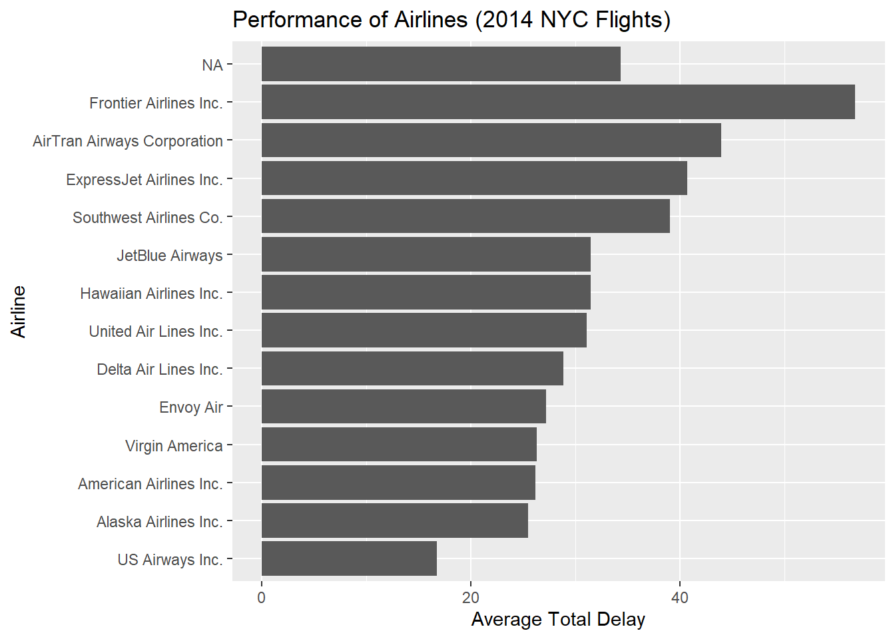

Code
library(data.table)
flights <- fread("data/flights14.csv")
airlines <- fread("data/airlines.csv")
# перевірка
is.data.table(flights)[1] TRUECode
is.data.table(airlines)[1] TRUEІнженерія даних | КрНУ ім. М. Остроградського
Освоїти сучасний інструмент для роботи з великими обсягами даних у R – пакет data.table. Навчитися виконувати швидкі, пам’ять-ефективні операції над мільйонами рядків: фільтрацію, агрегацію, оновлення, злиття – з використанням унікального синтаксису DT[i, j, by]. Зрозуміти, чому data.table є ключовим інструментом інженера даних при роботі з великими даними.
Ви отримали один великий файл flights14.csv (253 316 рядків), який містить дані про всі рейси, що вилітали з аеропортів Нью-Йорка у 2014 році (дані з nycflights14). Також у вас є довідник авіакомпаній airlines.csv з повними назвами перевізників.
Ваше завдання – провести повний аналіз продуктивності авіакомпаній виключно за допомогою data.table.
flights14.csv через fread().airlines.csv через fread().data.table.library(data.table)
flights <- fread("data/flights14.csv")
airlines <- fread("data/airlines.csv")
# перевірка
is.data.table(flights)[1] TRUEis.data.table(airlines)[1] TRUEtotal_delay = dep_delay + arr_delay на місці через :=.total_delay на 0 (рейс вчасно).year, month, day на місці.flights[, total_delay := dep_delay + arr_delay]
flights[total_delay < 0, total_delay := 0]
flights[, c("year", "month", "day") := NULL]carrier):
.N),total_delay,total_delay > 60 хв.by = carrier.keyby.flights[
,
.(
flights_count = .N,
avg_total_delay = mean(total_delay, na.rm = TRUE),
share_long_delays = mean(total_delay > 60, na.rm = TRUE)
),
by = carrier
][order(-avg_total_delay)] carrier flights_count avg_total_delay share_long_delays
<char> <int> <num> <num>
1: F9 473 56.80761 0.29598309
2: FL 1251 43.98881 0.20383693
3: EV 39819 40.74389 0.20382230
4: WN 11902 39.04159 0.17786927
5: OO 200 34.36000 0.14500000
6: B6 44479 31.48522 0.14633872
7: HA 260 31.48077 0.10384615
8: UA 46267 31.12713 0.14688655
9: DL 41683 28.87165 0.11863350
10: MQ 18559 27.21327 0.14294951
11: VX 4797 26.31478 0.10298103
12: AA 26302 26.15915 0.11539046
13: AS 574 25.48955 0.10627178
14: US 16750 16.78149 0.08226866airlines через on = "carrier", щоб додати повну назву авіакомпанії.carrier_performance.carrier_performance <- merge(
flights[
,
.(
flights_count = .N,
avg_total_delay = mean(total_delay, na.rm = TRUE),
share_long_delays = mean(total_delay > 60, na.rm = TRUE)
),
by = carrier
][order(-avg_total_delay)],
airlines,
by = "carrier",
all.x = TRUE
)
carrier_performanceKey: <carrier>
carrier flights_count avg_total_delay share_long_delays
<char> <int> <num> <num>
1: AA 26302 26.15915 0.11539046
2: AS 574 25.48955 0.10627178
3: B6 44479 31.48522 0.14633872
4: DL 41683 28.87165 0.11863350
5: EV 39819 40.74389 0.20382230
6: F9 473 56.80761 0.29598309
7: FL 1251 43.98881 0.20383693
8: HA 260 31.48077 0.10384615
9: MQ 18559 27.21327 0.14294951
10: OO 200 34.36000 0.14500000
11: UA 46267 31.12713 0.14688655
12: US 16750 16.78149 0.08226866
13: VX 4797 26.31478 0.10298103
14: WN 11902 39.04159 0.17786927
name
<char>
1: American Airlines Inc.
2: Alaska Airlines Inc.
3: JetBlue Airways
4: Delta Air Lines Inc.
5: ExpressJet Airlines Inc.
6: Frontier Airlines Inc.
7: AirTran Airways Corporation
8: Hawaiian Airlines Inc.
9: Envoy Air
10: <NA>
11: United Air Lines Inc.
12: US Airways Inc.
13: Virgin America
14: Southwest Airlines Co.origin) обчисліть:
dep_delay),.SD та .SDcols, якщо потрібно.flights[
,
.(
avg_dep_delay = mean(dep_delay, na.rm = TRUE),
unique_carriers = uniqueN(carrier)
),
by = origin
] origin avg_dep_delay unique_carriers
<char> <num> <int>
1: JFK 11.44617 9
2: LGA 10.60500 12
3: EWR 15.21248 11carrier_performance на data.frame через setDF().ggplot2).library(ggplot2)
setDF(carrier_performance)
ggplot(carrier_performance,
aes(x = reorder(name, avg_total_delay),
y = avg_total_delay)) +
geom_col() +
coord_flip() +
labs(
x = "Airline",
y = "Average Total Delay",
title = "Performance of Airlines (2014 NYC Flights)"
)
data.table.dplyr, tidyr, %>% для маніпуляцій з даними.data/.